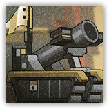
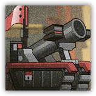

|
 |
弩炮塔。由炎国工部监造司专为玉门城设计打造的弩炮塔，被潜入的山海众劫持。玉门横行沙海之上，前行无阻，坚石可破。 专打高处。破坚不打眼前的人，它打站在最高处的人。 |
| AC 17 | 先攻 +0（10） |
| HP 105（14d10+28） | |
| 速度 15 尺 | |
| 调整 | 豁免 | 调整 | 豁免 | 调整 | 豁免 | |||||||||
|---|---|---|---|---|---|---|---|---|---|---|---|---|---|---|
| 力量 | 18 | +4 | +4 | 敏捷 | 8 | -1 | -1 | 体质 | 16 | +3 | +3 | |||
| 智力 | 4 | -3 | -3 | 感知 | 12 | +1 | +1 | 魅力 | 1 | -5 | -5 |
| 抗性 钝击、穿刺、挥砍（来自非魔法攻击） |
| 免疫 毒素，心灵；魅惑，力竭，恐慌，麻痹，石化，中毒 |
| 感官 盲视120尺；被动察觉11 |
| 语言 无 |
| CR 6（XP 2,300；PB +3） |
|
 |
加强弩炮塔。由炎国工部监造司专为玉门城设计打造的加强弩炮塔，同样被山海众劫持。玉门横行沙海之上，前行无阻，铁壁难存。 更重的一箭。碎壁的弩比破坚粗一圈，上弦要两个人。 |
| AC 18 | 先攻 +0（10） |
| HP 120（16d10+32） | |
| 速度 15 尺 | |
| 调整 | 豁免 | 调整 | 豁免 | 调整 | 豁免 | |||||||||
|---|---|---|---|---|---|---|---|---|---|---|---|---|---|---|
| 力量 | 19 | +4 | +4 | 敏捷 | 8 | -1 | -1 | 体质 | 17 | +3 | +3 | |||
| 智力 | 4 | -3 | -3 | 感知 | 13 | +1 | +1 | 魅力 | 1 | -5 | -5 |
| 抗性 钝击、穿刺、挥砍（来自非魔法攻击） |
| 免疫 毒素，心灵；魅惑，力竭，恐慌，麻痹，石化，中毒 |
| 感官 盲视120尺；被动察觉12 |
| 语言 无 |
| CR 7（XP 2,900；PB +3） |